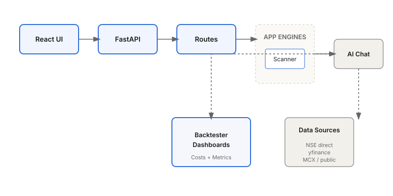

Architecture
The app separates deterministic market logic from optional AI chat. Intraday scanning, dashboards, strategy runs, and backtests are normal application paths with typed APIs.

API Gateway
indie_market_analyst/api_server.py is the FastAPI gateway. It exposes chat streaming, sessions, runs, market data, strategy execution, dashboards, and mounts the /intraday router.
Deterministic Intraday Engine
intraday_engine/ owns IST mode detection, NSE/yfinance source routing, universe building, filters, setup detectors, scoring, mode runners, JSON storage, and the typed API models returned to the UI.
Backtest Engine
backtest/ is pure pandas/numpy. It provides loaders, strategies, scans, trade derivation, optimizers, risk metrics, and the Indian transaction-cost model used by strategy and dashboard surfaces.
Optional AI Chat
indie_market_analyst/agent, tools, swarm, skills, and guardrails power the chat feature. YAML teams call source-backed tools and exchange strict Pydantic payloads before producing a final answer or report.
/intraday scan
-> universe + source routing
-> filters + detectors
-> probability scoring
-> JSON storage
-> picks table + chart overlays
/chat
-> team routing
-> tool calls
-> verification + guardrails
-> streamed markdown + SQLite history